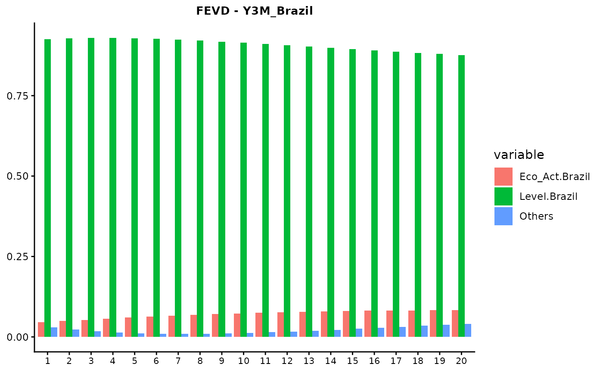
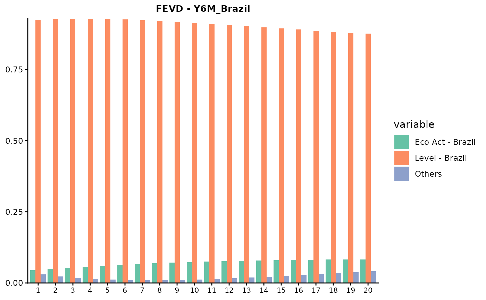
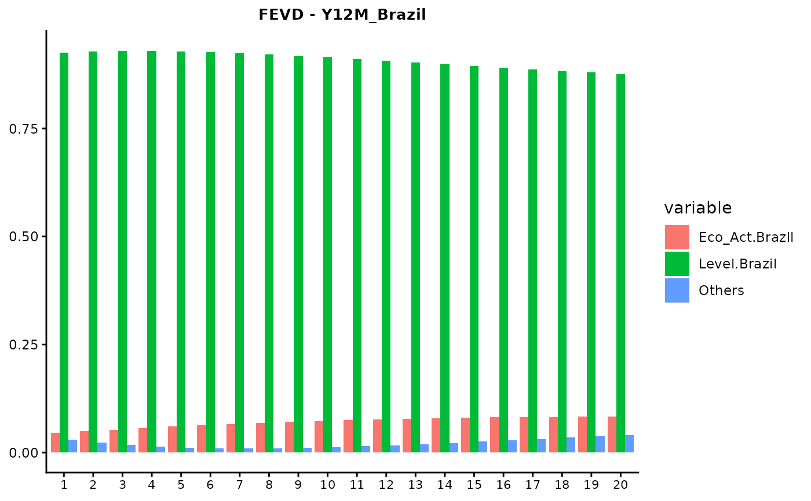
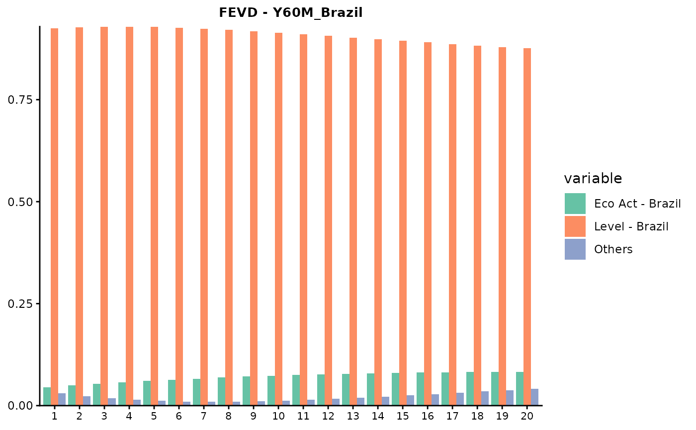

FEVD and GFEVD graphs for all models
Usage
FEVDandGFEVDgraphs(
ModelType,
NumOut,
WishPdynamicsgraphs,
WishYieldsgraphs,
FEVDhoriz,
PathsGraphs,
OutputType,
Economies,
Folder2save,
verbose
)Arguments
- ModelType
character. Estimated model type. Permissible choices: "JPS original", "JPS global", "GVAR single", "JPS multi", "GVAR multi", "JLL original", "JLL No DomUnit", "JLL joint Sigma".
- NumOut
list. Computed outputs containing model fit, IRFs, FEVDs, GIRFs, GFEVDs and Term premia.
- WishPdynamicsgraphs
logical. Set TRUE to generate risk factor graphs, FALSE otherwise.
- WishYieldsgraphs
logical. Set TRUE to generate bond yield graphs, FALSE otherwise.
- FEVDhoriz
integer. Desired horizon of analysis for the FEVDs.
- PathsGraphs
character. Path of the folder in which the graphs will be saved.
- OutputType
character. Available options: "FEVD", "GFEVD", "FEVD Ortho", "GFEVD Ortho".
- Economies
character vector. Names of the
Ceconomies included in the system.- Folder2save
character. Folder path where the outputs will be stored.
- verbose
logical. Flag controlling function messaging.
Available Methods
- `autoplot(object, type = "FEVD_Factor")`, `autoplot(object, type = "FEVD_Yields")`,
`autoplot(object, type = "GFEVD_Yields")`, `autoplot(object, type = "GFEVD_Yields")`.
For JLL-based models: `autoplot(object, type = "FEVD_Factor-_Ortho")`,
`autoplot(object, type = "FEVD_Yields_Ortho")`, `autoplot(object, type = "GFEVD_Yields_Ortho")`,
`autoplot(object, type = "GFEVD_Yields_Ortho")`.
Examples
data("NumOutEx")
ModelType <- "JPS original"
Economy <- "Brazil"
FEVDhoriz <- 20
FEVDandGFEVDgraphs(ModelType, NumOutEx,
WishPdynamicsgraphs = FALSE, WishYieldsgraphs = TRUE, FEVDhoriz,
PathsGraphs = NULL, OutputType = "FEVD", Economy,
Folder2save = NULL, verbose = FALSE
)
#> $Brazil
#> $Brazil$Y3M_Brazil

#>
#> $Brazil$Y6M_Brazil

#>
#> $Brazil$Y12M_Brazil

#>
#> $Brazil$Y36M_Brazil
#>
#> $Brazil$Y60M_Brazil

#>
#> $Brazil$Y120M_Brazil
#>
#>